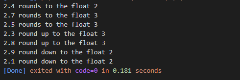
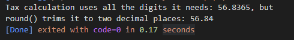

You want to round a floating-point numbers, either to an integer value or to set number of decimal places
- $round = round(2.4);
- printf("2.4 rounds to the float %s", $round);
- $round = round(2.7);
- printf("\n2.7 rounds to the float %s", $round);
- $round = round(2.5);
- printf("\n2.5 rounds to the float %s", $round);
- $ceil = ceil(2.3);
- printf("\n2.3 round up to the float %s", $ceil);
- $ceil = ceil(2.8);
- printf("\n2.8 round up to the float %s", $ceil);
- $floor = floor(2.9);
- printf("\n2.9 round down to the float %s", $floor);
- $floor = floor(2.1);
- printf("\n2.1 round down to the float %s", $floor);
The example code prints:
To keep a set number of digits after the decimal point, round() accept an optional precision argument. For example, perhaps calculating the total price for the items in a user's shopping cart.
- $cart = 54.13;
- $tax = $cart * 0.05;
- $total = $cart + $tax;
- $final = round($total, 2);
- print "Tax calculation uses all the digits it needs: $total, but ";
- print "\nround() trims it to two decimal places: $final";
The example code prints:
